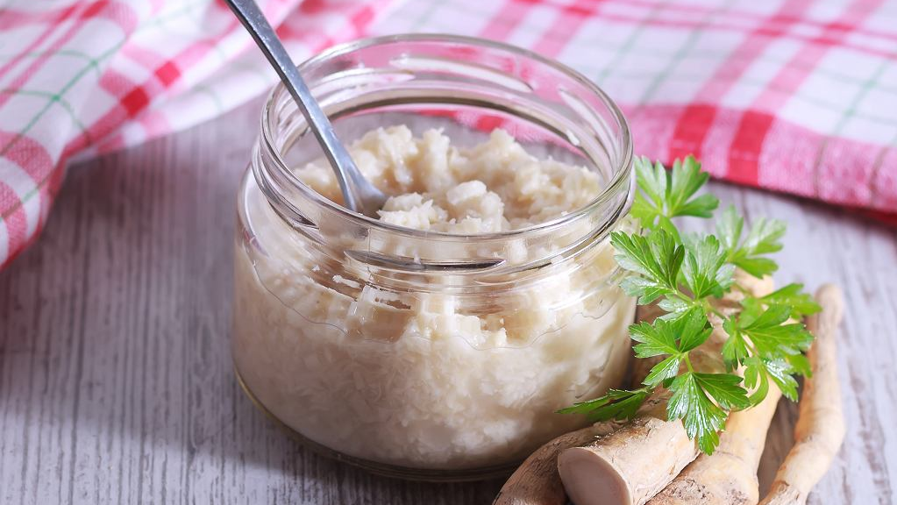

Easter horseradish cream

This is a staple horseradish cream, that my mom makes every Easter.
Since I moved out this is the one Easter dish I always make sure to make
too. You can make it however spicy you wish, by simply mixing in spicy
or mild horseradish, or combining the two. As a kid I loved the mild
version, but nowadays I do enjoy some spice in it!
Ingredients
- 140 g of 18% sour cream
- 3 eggs
- 3 tablespoons sugar
- 2 small jars of horseradish (1 jar is usually ~200 g)
Steps
-
Combine sour cream, raw eggs and sugar in a saucepan without heat.
-
After mixing them thoroughly put it on heat and bring it to boil
while constantly stirring. Let it cool off.
-
While waiting for the mixture to cool, drain the horseradish on a
sieve. You can press on the horseradish to make the fluids drain
faster.
-
Mix everything together and put the cream to the fridge for a full
day, so the flavours can fully combine.